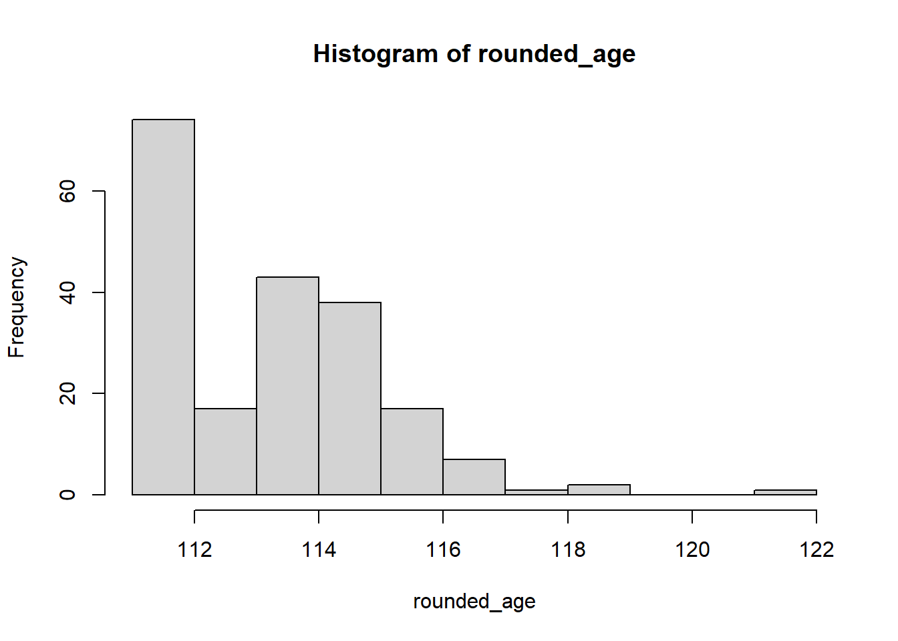

These are lists of the 100 known verified oldest people sorted in descending order by age in years and days. This data comes from Wikipedia List of verified oldest people via frankiethull on Github. Source= https://github.com/rfordatascience/tidytuesday/tree/master/data/2023/2023-05-30
Getting the data:
#read in packagesinstall.packages("tidytuesdayR")
The following package(s) will be installed:
- tidytuesdayR [1.0.2]
These packages will be installed into "~/RSPH MPH/Courses/2023 FA/EPI 590R/final-project/renv/library/R-4.1/x86_64-w64-mingw32".
# Installing packages --------------------------------------------------------
- Installing tidytuesdayR ... OK [linked from cache]
Successfully installed 1 package in 32 milliseconds.
install.packages("tidyverse")
The following package(s) will be installed:
- tidyverse [2.0.0]
These packages will be installed into "~/RSPH MPH/Courses/2023 FA/EPI 590R/final-project/renv/library/R-4.1/x86_64-w64-mingw32".
# Installing packages --------------------------------------------------------
- Installing tidyverse ... OK [linked from cache]
Successfully installed 1 package in 32 milliseconds.
install.packages("gtsummary")
The following package(s) will be installed:
- gtsummary [1.7.2]
These packages will be installed into "~/RSPH MPH/Courses/2023 FA/EPI 590R/final-project/renv/library/R-4.1/x86_64-w64-mingw32".
# Installing packages --------------------------------------------------------
- Installing gtsummary ... OK [linked from cache]
Successfully installed 1 package in 32 milliseconds.
#| include: falselibrary(tidyverse)
Warning: package 'tidyverse' was built under R version 4.1.3
Warning: package 'tibble' was built under R version 4.1.3
Warning: package 'tidyr' was built under R version 4.1.3
Warning: package 'readr' was built under R version 4.1.3
Warning: package 'purrr' was built under R version 4.1.3
Warning: package 'dplyr' was built under R version 4.1.3
Warning: package 'stringr' was built under R version 4.1.3
Warning: package 'forcats' was built under R version 4.1.3
Warning: package 'lubridate' was built under R version 4.1.3
-- Attaching core tidyverse packages ------------------------ tidyverse 2.0.0 --
v dplyr 1.1.2 v readr 2.1.4
v forcats 1.0.0 v stringr 1.5.0
v ggplot2 3.4.3 v tibble 3.2.1
v lubridate 1.9.2 v tidyr 1.3.0
v purrr 1.0.1
-- Conflicts ------------------------------------------ tidyverse_conflicts() --
x dplyr::filter() masks stats::filter()
x dplyr::lag() masks stats::lag()
i Use the conflicted package (<http://conflicted.r-lib.org/>) to force all conflicts to become errors
Rows: 200 Columns: 8
-- Column specification --------------------------------------------------------
Delimiter: ","
chr (4): name, place_of_death_or_residence, gender, still_alive
dbl (2): rank, age
date (2): birth_date, death_date
i Use `spec()` to retrieve the full column specification for this data.
i Specify the column types or set `show_col_types = FALSE` to quiet this message.
#or read the csv file manuallycentenarians <- readr::read_csv('https://raw.githubusercontent.com/rfordatascience/tidytuesday/master/data/2023/2023-05-30/centenarians.csv')
Rows: 200 Columns: 8
-- Column specification --------------------------------------------------------
Delimiter: ","
chr (4): name, place_of_death_or_residence, gender, still_alive
dbl (2): rank, age
date (2): birth_date, death_date
i Use `spec()` to retrieve the full column specification for this data.
i Specify the column types or set `show_col_types = FALSE` to quiet this message.
Recoding data to prepare for regression analysis:
#gender variable recoding. if gender= female, then gender1= 1. male= 0.centenarians$gender1 <-ifelse(centenarians$gender %in%c("female"),1,0)#still_alive recoding. if still_alive= alive, then still_alive1= 1.deceased= 0.centenarians$still_alive1 <-ifelse(centenarians$still_alive %in%c("alive"),1,0)
#pulling from a tableinline_text(regress_table, variable ="gender1")
[1] "1.00 (95% CI 0.30, 3.30; p>0.9)"
#finding mean value using inline. Print inlinestats <-list(n =nrow(data),mean_age =mean(centenarians$age))
There were participants with a mean age of 114.0591923.
Creating a figure
#round age data first. round down to nearest integer & create new vector for the roudned age.rounded_age <-floor(centenarians$age)#| label: fig-hist#| fig-cap: "This is a histogram of the rounded ages."hist(rounded_age)

?@fig-hist contains a histogram and ?@tbl-regression contains a table of the regression results.
Write and use a function
standard deviation:
#testing first by making a datasetx <-c(20,4,67,100,65,20,17,66,83,61,33,54,22,39,70)#standard dev steps:#first find the mean: mean(x)#find each datapoint's distance to the mean: x-mean#square of each datapoint's distance to the mean: (x-mean)^2#sum these distances: sum(x-mean)(x)^2#divide by n-1 data points in the dataset: (/ length(x)-1)#double check parenthesiss <-sqrt(sum( (x-mean(x))^2/ (length(x)-1)))print(s)
[1] 28.08016
#checkingsd(x)
[1] 28.08016
# it works :) now use on dataset#use originial "age" variable, not the rounded variable you used earlier in the Figure section.st_dev <-sqrt(sum ((centenarians$age-mean(centenarians$age))^2/ (length(centenarians$age)-1)))print(st_dev)